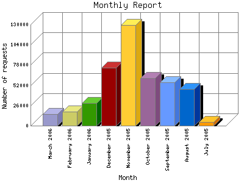

The Monthly Report identifies activity for each month in the report
time frame. Remember that each page hit can result in several server requests
as the images for each page are loaded.
Note: Depending on the
report time frame, the first and last months may not represent a complete
month's worth of data, resulting in lower hits.

| Month | Number of requests | Number of page requests | |
|---|---|---|---|
| 1. | July 2005 | 5,058 | 77 |
| 2. | August 2005 | 46,943 | 1,300 |
| 3. | September 2005 | 55,496 | 1,422 |
| 4. | October 2005 | 61,291 | 1,910 |
| 5. | November 2005 | 129,087 | 3,127 |
| 6. | December 2005 | 74,083 | 2,530 |
| 7. | January 2006 | 28,782 | 1,652 |
| 8. | February 2006 | 17,853 | 1,348 |
| 9. | March 2006 | 14,661 | 1,500 |
Most active month November 2005 : 3,127 pages sent.
Monthly average: 1486.6 pages sent. 43325.4 requests handled. 1.958 KB bytes served.
This report was generated on March 30, 2006 04:52.
Report time frame July 28, 2005 09:49 to March 29, 2006 23:38.
| Web statistics report produced by: | |
| analog 5.1 | Report Magic for Analog 2.10 |